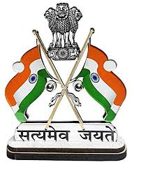
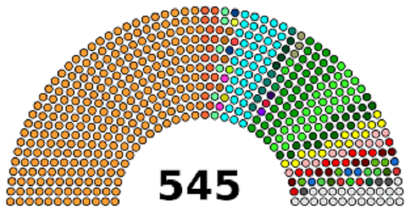

The Lok Sabha (House of the People) is the lower house of India's bicameral Parliament, with the upper house being the Rajya Sabha. Members of the Lok Sabha are elected by adult universal suffrage and a first-past-the-post system to represent their respective constituencies, and they hold their seats for five years or until the body is dissolved by the President on the advice of the council of ministers. The house meets in the Lok Sabha Chambers of the Sansad Bhavan in New Delhi
| 16th LOK SABHA(House Of The People) | |
|---|---|
| Type: | Lower House of the Parliament of India |
| Term limits: | 5 years |
| Speaker: | Sumitra Mahajan, BJP since 6 June 2014 |
| Leader of the House: | Narendra Modi, BJP since 26 May 2014 |
| Seats: | 545 (523 States + 20 Union Territories + 2 Nominated) |
|  | |